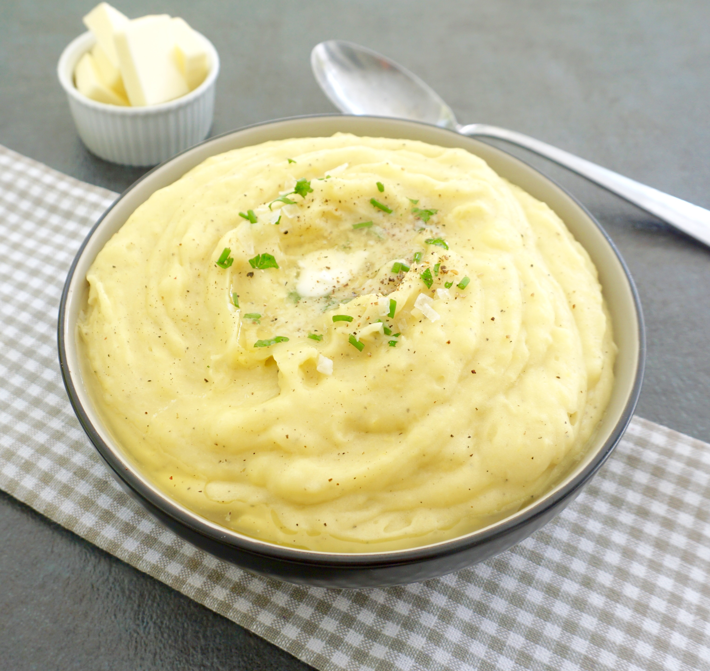

Classic Mashed Potatoes

Servings: 4 people

Prep Time: 15 minutes

Cook Time: 20 minutes
Nothing complements a hearty main dish better than a creamy, buttery bowl of mashed potatoes. This classic recipe brings out the best in your spuds, ensuring a deliciously smooth and flavorful side dish perfect for any occasion.
Did you know? Mashed potatoes date back to 1771 when they were first mentioned in a French cookbook. They have since become a staple in many cuisines around the world, beloved for their creamy texture and versatility!